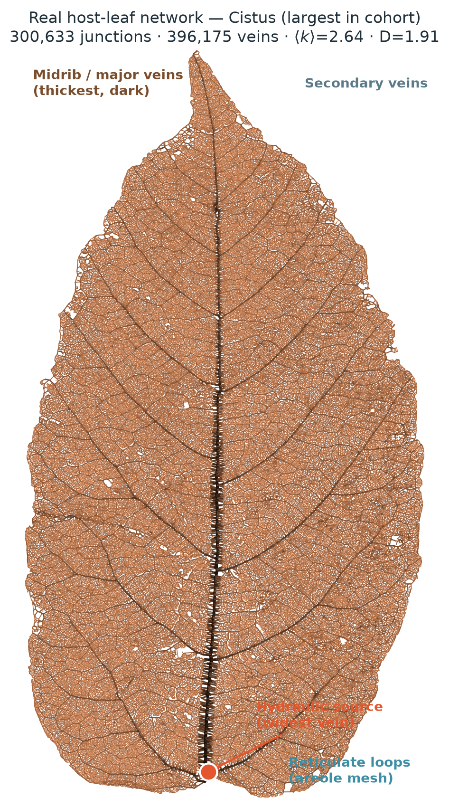
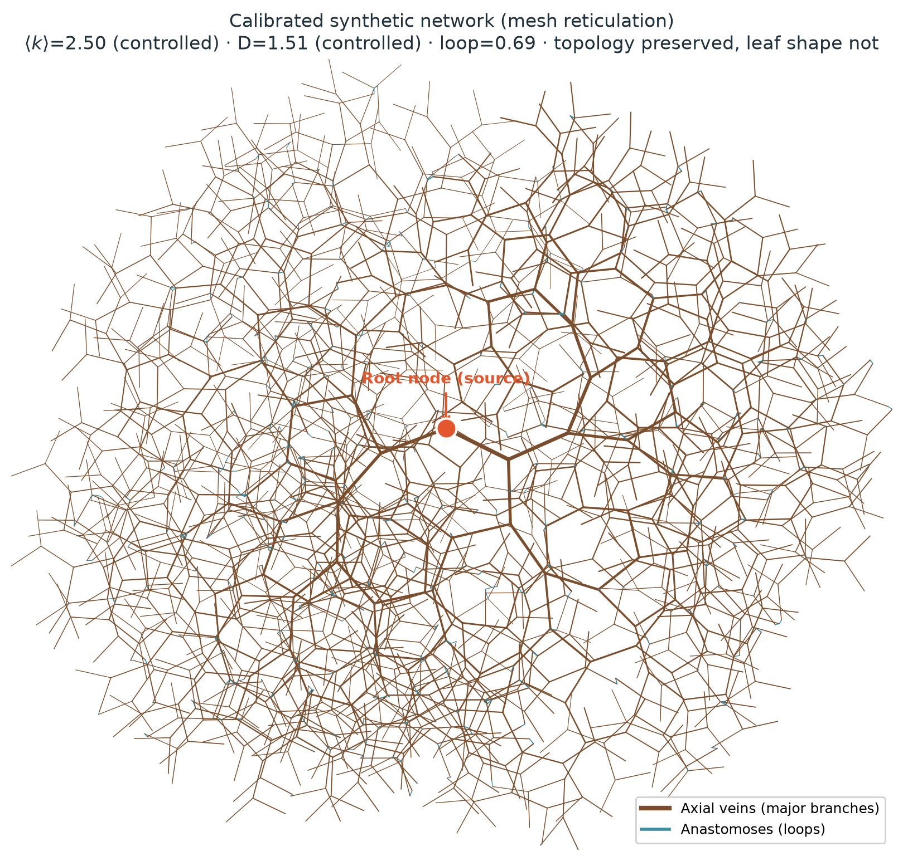
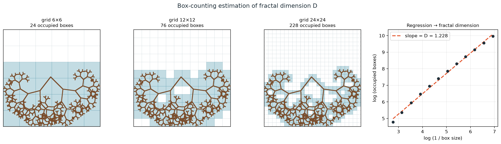
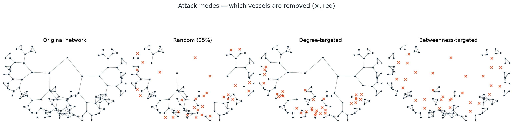
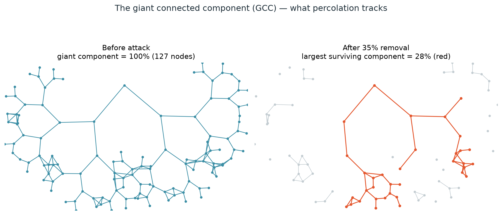
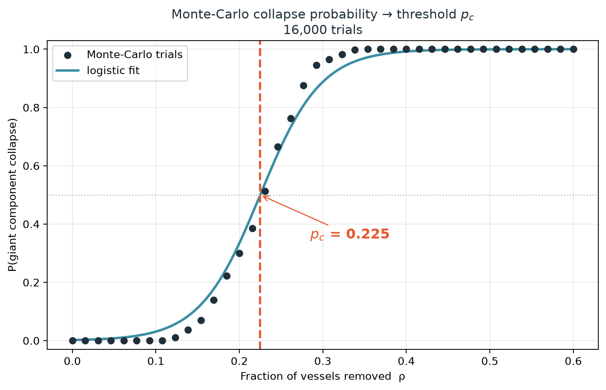

Percolation Analysis of Pre-Symptomatic Giant-Component Collapse in Host Xylem Networks Driven by Holoparasitic Haustorial Sink Dynamics
figures/methodology/.Place: immediately after "Software Development Framework." Serves as the software-architecture diagram for the whole methodology.
Figure 1. Architecture of the custom Python framework. Real leaf networks (blue) and calibrated synthetic networks feed a single shared physics and percolation engine, so real and synthetic data are analysed identically; all results are exported as machine-readable tables and publication figures (orange).
Place: during Data Acquisition.
Figure 2. What is downloaded from Dryad. Each of the 120 species ships a node table (vein junctions with pixel coordinates and a mm/pixel calibration) and a vein table (segments with width and length), plus a metadata table carrying an extraction-quality grade. These tables are read directly by the framework; no image processing is performed by this study.
Place: during Construction of the Vascular Graph.
nodes = vascular junctions · edges = xylem vessels (thickness ∝ radius) · blue edges = reticulate loops
Figure 3. Reconstruction of a NetworkX graph from the published coordinate tables. Junctions become nodes at their measured positions and vein segments become weighted edges carrying radius, length and a Hagen–Poiseuille conductance. The graph is rebuilt directly from Matos et al.'s coordinates, not re-extracted from leaf images.
Place: keep your current figure — this is the improved, annotated version.

Figure 4. The largest leaf in the analysis cohort (Cistus, ~300,000 junctions and ~396,000 veins) reconstructed as a graph. The hydraulic source (orange) is placed on the widest vein; edge darkness and thickness encode vein caliber, resolving the midrib and major veins, the secondary veins, and the fine reticulate loop mesh. This is the real venation topology on which the physics is solved directly.
Place: keep your current figure — improved, annotated version.

Figure 5. A calibrated synthetic network. Axial veins (brown) form the branching skeleton from the root node (orange); anastomoses (blue) close loops via planar-mesh reticulation. Connectivity ⟨k⟩ and fractal dimension D are set independently by the generator. The generator reproduces the branching topology of real venation, not the external leaf silhouette.
Place: immediately after Figure 5.
| Property | Reproduced in synthetic? | Note |
|---|---|---|
| Fractal dimension (D) | ✔ | matched & controllable (1.26–1.81) |
| Degree distribution | ✔ | mean degree calibrated to real median |
| Connectivity ⟨k⟩ | ✔ | independently controllable |
| Loop density | ✔ | planar-mesh reticulation |
| External leaf shape | ✘ | intentionally not reproduced |
Figure 6. The synthetic network is not meant to resemble the leaf silhouette. What is preserved is the topology — fractal dimension, degree distribution, connectivity and loop density — while the geometry is deliberately generic, so that ⟨k⟩ and D can be varied independently in the causal experiments.
Place: during the Fractal Dimension discussion.

Figure 7. Estimation of fractal dimension D by box-counting. The network is overlaid with grids of decreasing box size; the number of occupied boxes is counted at each scale. The slope of log(occupied boxes) versus log(1/box size) is the fractal dimension D.
Place: during Hydraulic Modeling.
solved as a conductance (Laplacian) system L·Ψ = b for the nodal water potentials
Figure 8. The hydraulic model. Water enters at the source held at potential ψ = 0, flows down the pressure gradient through each vein (conductance set by the Hagen–Poiseuille law, g ∝ r⁴/L), and exits at the terminal veins held at the leaf potential. The steady-state potential field is obtained by solving the conductance-Laplacian linear system.
Place: during the Percolation Simulation.

Figure 9. Three vessel-removal strategies applied to the same network (removed vessels marked ✗ in red). Random removal is classic site percolation; degree-targeted removes the most-connected junctions first; betweenness-targeted removes the structurally critical backbone vessels first. Each mode models a different mode of haustorial attack on the host network.
Place: immediately after Attack Simulation.

Figure 10. The giant connected component (GCC) is the largest set of still-connected junctions. Before attack (left) the whole network is one connected component. After enough vessels are removed (right) the network shatters into disconnected fragments (grey); the largest surviving component (red) is what percolation tracks. Collapse is recorded when the GCC falls below half the original network.
Place: during the Monte-Carlo discussion.

Figure 11. At each removal fraction ρ the attack is repeated over many stochastic trials; the fraction of trials that collapse gives the collapse probability. A logistic curve fitted to these probabilities locates the percolation threshold pc (the removal fraction at which collapse probability = 0.5).
Place: during Statistical Analysis. Replaces several paragraphs of text.
Figure 12. Statistical decision path. Group differences in pc are tested for normality (Shapiro–Wilk); normally-distributed data use parametric ANOVA with Tukey post-hoc tests, otherwise the non-parametric Kruskal–Wallis with Dunn post-hoc tests are used.
Place: at the end of the methodology.
Figure 13. Outputs produced by the framework. Every analysis exports machine-readable tables (CSV/JSON) for reproducibility alongside the publication figures — percolation curves, parameter heatmaps and regression plots — used throughout the Results.